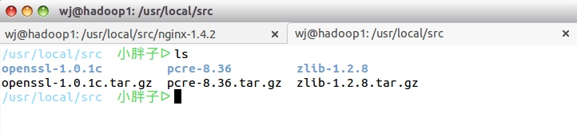
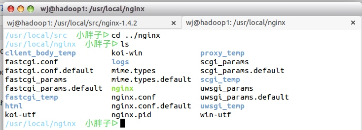
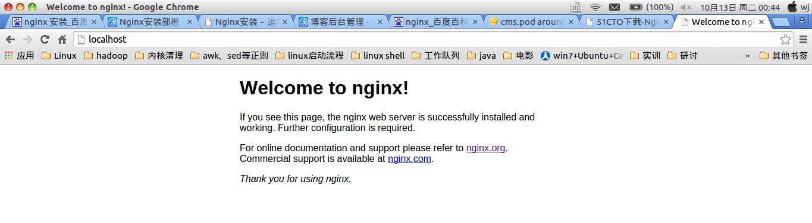
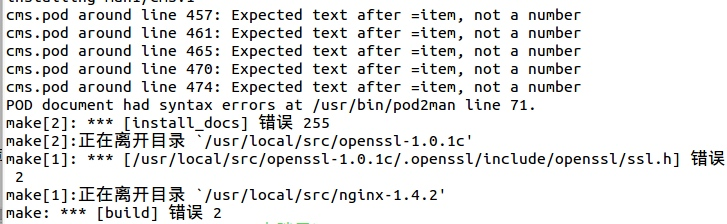

ubuntu 下 nginx 的安裝
本系列的lnmp的大框架基本上是按照http://www.linuxzen.com/lnmphuan-jing-da-jian-wan-quan-shou-ce-si-lnmpda-jian-yuan-ma-an-zhuang.html来写的
Nginx是一款轻量级的Web 服务器/反向代理服务器及电子邮件（IMAP/POP3）代理服务器，因它的稳定性、丰富的功能集、示例配置文件和低系统资源的消耗而闻名，其特点是占有内存少，并发能力强，事实上nginx的并发能力确实在同类型的网页服务器中表现较好，著名的使用nginx网站用户有：百度、新浪、网易、腾讯等。
Nginx代码完全用C语言从头写成，已经移植到许多体系结构和操作系统，包括：linux、freebsd、OS X、windows等。Nginx有自己的函数库，并且除了zlib、pcre和openssl之外，标准模块只使用系统C库函数。而且，如果不需要或者考虑到潜在的授权冲突，可以不使用这些第三方库。
从上面可以看到nginx是依赖于三个库的：zlib、pcre和openssl。nginx的安装相对来说还算简单，我在安装过程中只遇到了一个问题，运气比较好。今天本来想搞个vim+ycm+clang自动补全的装了一天还没成功，结果问题都是莫名其妙的，果断放弃。好了，说了这么多废话，下面开干吧。
1.选择nginx源码目录
你可以选择任何地方，我选的是/usr/local/src
2、安装pcre库
在ftp://ftp.csx.cam.ac.uk/pub/software/programming/pcre/下有pcre的源码包，你可以直接点击下载，也可以wget下载，我选的是wget下载，并使用下面的命令下载编译安装pcre包：
cd /usr/local/src wget ftp://ftp.csx.cam.ac.uk/pub/software/programming/pcre/pcre-8.36.tar.gz tar -xvzf pcre-8.36.tar.gz && cd pcre-8.36.tar.gz sudo ./configure(注意，必须使用sudo才可以，不然出错，因为在/usr/local下 不是用户目录下) sudo make && sudo make install
（pcre库会更新的，选择合适的即可，尽量选择pcre而不是pcre2库，因为有人选了pcre2出现问题）
3、安装zlib库
在http://zlib.net/下看current version是多少，然后，wget下载，我下载时是1.2.8版本，并使用下面的命令下载编译安装zlib包：
cd /usr/local/src wget http://zlib.net/zlib-1.2.8.tar.gz tar -zxvf zlib-1.2.8.tar.gz && cd zlib-1.2.8 sudo ./configure && sudo make && sudo make install
4、安装openssl库
openssl的源码在http://www.openssl.org/source/下，可以直接进入下载，也可以wget下载，并使用下面的命令下载编译安装openssl包：
cd /usr/local/src && wget http://www.openssl.org/source/openssl-1.0.1c.tar.gz tar -xvzf openssl-1.0.1c.tar.gz && cd openssl-1.0.1c.tar.gz sudo ./configure && sudo make && sudo make install
此时基本上所有nginx需要的库都已经安装好，/usr/local/src的目录结构是这样的（版本可能不同，这个无所谓）:

5、安装nginx
nginx的源码在http://nginx.org/download/下，想要什么版本直接下载就行了，并使用下面的命令下载编译安装nginx包：
cd /usr/local/src && wget http://nginx.org/download/nginx-1.4.2.tar.gz tar -zxvf nginx-1.4.2.tar.gz && cd nginx-1.4.2 sudo ./configure --sbin-path=/usr/local/nginx/nginx --conf-path=/usr/local/nginx/nginx.conf --pid-path=/usr/local/nginx/nginx.pid --with-http_ssl_module --with-pcre=/usr/local/src/pcre-8.36 --with-zlib=/usr/local/src/zlib-1.2.8 --with-openssl=/usr/local/src/openssl-1.0.1c sudo make && sudo make install
记住，sudo ./configure后面跟的参数只要是和之前安装的库有关的都是以自己下载的库的版本为准！
在这边./configure后面跟了很多参数，具体参数含义如下：
--prefix=path - Nginx安装路径。如果没有指定，默认为 /usr/local/nginx。
--sbin-path=path - Nginx可执行文件安装路径。只能安装时指定，如果没有指定，默认为prefix/sbin/nginx。
--conf-path=path - 在没有给定-c选项下默认的nginx.conf的路径。如果没有指定，默认为prefix/conf/nginx.conf。
--pid-path=path - 在nginx.conf中没有指定pid指令的情况下，默认的nginx.pid的路径。如果没有指定，默认为 prefix/logs/nginx.pid。
--lock-path=path - nginx.lock文件的路径。
--error-log-path=path - 在nginx.conf中没有指定error_log指令的情况下，默认的错误日志的路径。如果没有指定，默认为 prefix/logs/error.log。
--http-log-path=path - 在nginx.conf中没有指定access_log指令的情况下，默认的访问日志的路径。如果没有指定，默认为 prefix/logs/access.log。
--user=user - 在nginx.conf中没有指定user指令的情况下，默认的nginx使用的用户。如果没有指定，默认为 nobody。
--group=group - 在nginx.conf中没有指定user指令的情况下，默认的nginx使用的组。如果没有指定，默认为 nobody。
--builddir=DIR - 指定编译的目录
--with-rtsig_module - 启用 rtsig模块
--with-select_module --without-select_module - 启用或禁用构建一个模块来允许服务器使用select()方法，该模块将自动建立，如果平台不支持的kqueue，epoll，rtsig或/dev/poll
--with-poll_module --without-poll_module - 启用或禁用构建一个模块来允许服务器使用poll()方法。该模块将自动建立，如果平台不支持的kqueue，epoll，rtsig或/dev/poll
--with-http_ssl_module -开启HTTP SSL模块，使NGINX可以支持HTTPS请求。这个模块需要已经安装了OPENSSL，在DEBIAN上是libssl
--with-http_realip_module - 启用 ngx_http_realip_module
--with-http_addition_module - 启用 ngx_http_addition_module
--with-http_sub_module - 启用 ngx_http_sub_module
--with-http_dav_module - 启用 ngx_http_dav_module
--with-http_flv_module - 启用 ngx_http_flv_module
--with-http_stub_status_module - 启用 "server status" 页
--without-http_charset_module - 禁用 ngx_http_charset_module
--without-http_gzip_module - 禁用 ngx_http_gzip_module. 如果启用，需要 zlib。
--without-http_ssi_module - 禁用 ngx_http_ssi_module
--without-http_userid_module - 禁用 ngx_http_userid_module
--without-http_access_module - 禁用 ngx_http_access_module
--without-http_auth_basic_module - 禁用 ngx_http_auth_basic_module
--without-http_autoindex_module - 禁用 ngx_http_autoindex_module
--without-http_geo_module - 禁用 ngx_http_geo_module
--without-http_map_module - 禁用 ngx_http_map_module
--without-http_referer_module - 禁用 ngx_http_referer_module
--without-http_rewrite_module - 禁用 ngx_http_rewrite_module. 如果启用需要 PCRE。
--without-http_proxy_module - 禁用 ngx_http_proxy_module
--without-http_fastcgi_module - 禁用 ngx_http_fastcgi_module
--without-http_memcached_module - 禁用 ngx_http_memcached_module
--without-http_limit_zone_module - 禁用 ngx_http_limit_zone_module
--without-http_empty_gif_module - 禁用 ngx_http_empty_gif_module
--without-http_browser_module - 禁用 ngx_http_browser_module
--without-http_upstream_ip_hash_module - 禁用 ngx_http_upstream_ip_hash_module
--with-http_perl_module - 启用 ngx_http_perl_module
--with-perl_modules_path=PATH - 指定 perl模块的路径
--with-perl=PATH - 指定 perl 执行文件的路径
--http-log-path=PATH - Set path to the http access log
--http-client-body-temp-path=PATH - Set path to the http client request body temporary files
--http-proxy-temp-path=PATH - Set path to the http proxy temporary files
--http-fastcgi-temp-path=PATH - Set path to the http fastcgi temporary files
--without-http - 禁用 HTTP server
--with-mail - 启用 IMAP4/POP3/SMTP 代理模块
--with-mail_ssl_module - 启用 ngx_mail_ssl_module
--with-cc=PATH - 指定 C编译器的路径
--with-cpp=PATH - 指定 C预处理器的路径
--with-cc-opt=OPTIONS - 设置额外的参数将被添加到CFLAGS变量。例如,当你在FreeBSD上使用PCRE库时需要使用:--with-cc-opt="-I /usr/local/include。.如需要需要增加 select()支持的文件数量:--with-cc-opt="-D FD_SETSIZE=2048".
--with-ld-opt=OPTIONS - 设置附加的参数，将用于在链接期间。例如，当在FreeBSD下使用该系统的PCRE库,应指定:--with-ld-opt="-L /usr/local/lib".
--with-cpu-opt=CPU - 为特定的 CPU 编译，有效的值包括：pentium,pentiumpro,pentium3,pentium4,athlon,opteron,amd64,sparc32,sparc64,ppc64
--without-pcre - 禁止 PCRE 库的使用。同时也会禁止 HTTP rewrite 模块。在 "location" 配置指令中的正则表达式也需要 PCRE。
--with-pcre=DIR - 指定 PCRE 库的源代码的路径。
--with-pcre-opt=OPTIONS - Set additional options for PCRE building.
--with-md5=DIR - Set path to md5 library sources.
--with-md5-opt=OPTIONS - Set additional options for md5 building.
--with-md5-asm - Use md5 assembler sources.
--with-sha1=DIR - Set path to sha1 library sources.
--with-sha1-opt=OPTIONS - Set additional options for sha1 building.
--with-sha1-asm - Use sha1 assembler sources.
--with-zlib=DIR - Set path to zlib library sources.
--with-zlib-opt=OPTIONS - Set additional options for zlib building.
--with-zlib-asm=CPU - Use zlib assembler sources optimized for specified CPU,valid values are: pentium,pentiumpro
--with-openssl=DIR - Set path to OpenSSL library sources
--with-openssl-opt=OPTIONS - Set additional options for OpenSSL building
--with-debug - 启用调试日志
--add-module=PATH - Add in a third-party module found in directory PATH
在不同版本间，选项可能会有些许变化，请总是使用 ./configure --help 命令来检查一下当前的选项列表。
nginx安装完之后看一下/usr/local/下有没有生成nginx这个文件夹，如果生成了且你在nginx编译安装时都没有报错那么恭喜你，基本上成功了。我的/usr/local/nginx目录结构是这样的（仅供参考，可能会不一样）：

即使是这样，你也不能100%确定你真的安装成功了，还差最后一步就能知道你是否成功了。
6、验证
确保系统的 80 端口没被其他程序占用，运行/usr/local/nginx/nginx 命令来启动 Nginx。
netstat -ano|grep 80 查看80端口 sudo /usr/local/nginx/nginx
打开浏览器，输入localhost:80

安装成功！
可能遇到的问题和帮助信息
在你安装配置的过程中可能随着安装库的版本不同而导致不同的问题，我在使用上述库中只在最后nginx的make遇到了问题，问题如图

出现这个问题可能是安装openssl时出了问题，后来发现openssl没有make和make install，于是在root权限下，执行sudo rm -f /usr/bin/pod2man，再make和make install